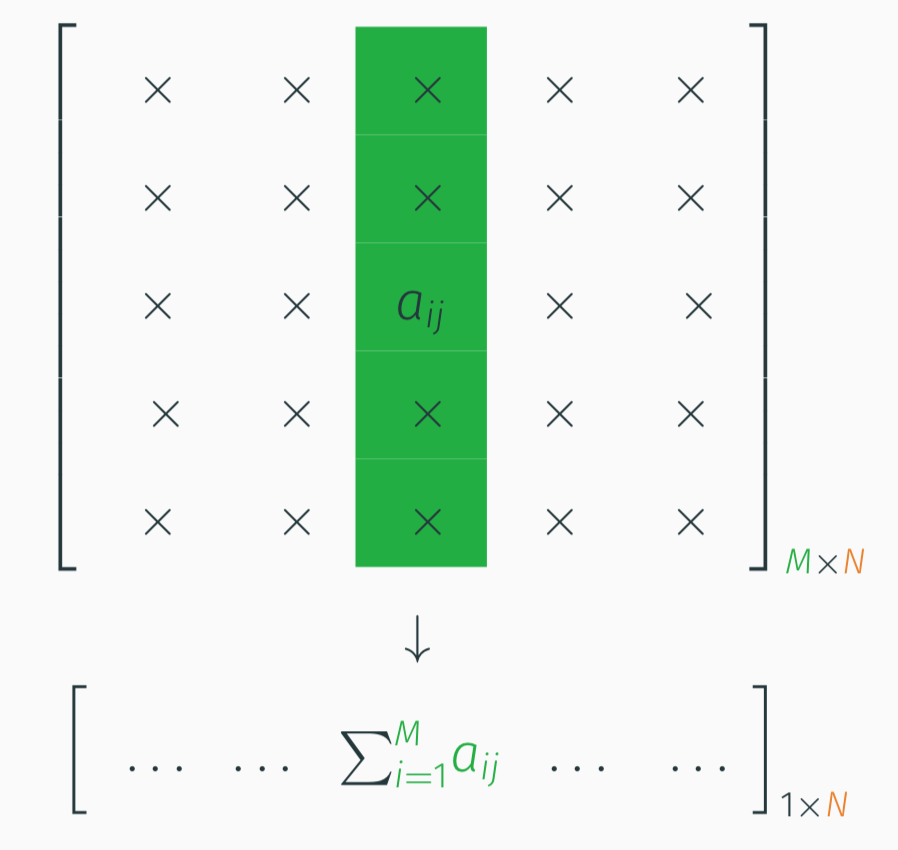
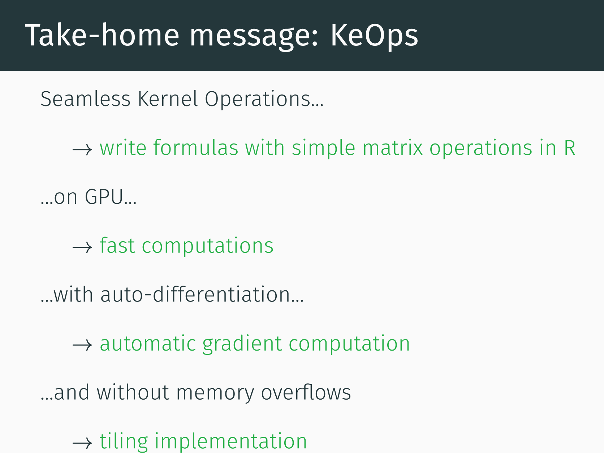

Sources:
KeOps stands for “Kernel Operations”. RKeOps is an R package interfacing the KeOps library.
Kernels are widely used in Statistics and Learning:
The main motivation behind KeOps is the need to compute fast and scalable kernel operations such as Gaussian convolutions (RBF kernel products). For very large values of \(M\)and \(N\), given :
KeOps allows you to compute efficiently the array \((a_i)_{i=1}^M \in \mathbb R^{M}\) given by
\[ a_i = \sum_j K(x_i,y_j) b_j, \qquad i=1,\cdots,M,\] where \(K\) is e.g. the Gaussian Kernel: \(K(x,y) = \exp\left(-\Vert x_i - y_j \Vert^2/(2\sigma^2) \right)\).
These types of operations involve reductions of very large arrays e.g. row-wise or column-wise matrix sums:

Thanks to KeOps’ automatic differentiation module, you can also get access to the gradient of the \(a_i\)’s with respect to the \(x_i\)’s:
\[ a_i' = \sum_{j=1}^N \partial_x K(x_i,y_j) b_j, \qquad i=1,\cdots,M,\]
without having to code the formula \(\partial_x K(x_i,y_j) = -\tfrac{1}{\sigma^2}(x_i - y_j) \exp(-\|x_i - y_j\|^2 / 2 \sigma^2)\)!

Reference: Installation page
The package is only available from UNIX-type platforms
Installation requires cmake.
To install cmake on a Mac one can use:
brew install cmakeThen the rkeops package can be installed from CRAN:
if (!require("rkeops")) {
install.packages("rkeops")
}library("rkeops")##
## You are using rkeops version 1.4.1.1RKeOps allows to define and compile new operators that run computations on GPU.
# implementation of a convolution with a Gaussian kernel
formula = "Sum_Reduction(Exp(-s * SqNorm2(x - y)) * b, 0)"
# input arguments
args = c("x = Vi(3)", # vector indexed by i (of dim 3)
"y = Vj(3)", # vector indexed by j (of dim 3)
"b = Vj(6)", # vector indexed by j (of dim 6)
"s = Pm(1)") # parameter (scalar)Then we compile the formula:
# compilation
op <- keops_kernel(formula, args)## Compiling headersb72ec1124da8340d0118a99af in /usr/share/miniconda/envs/finistR2020/lib/R/library/rkeops:
## formula: Sum_Reduction(Exp(-s * SqNorm2(x - y)) * b, 0)
## aliases: decltype(Vi(0,3)) x ;decltype(Vj(1,3)) y ;decltype(Vj(2,6)) b ;decltype(Pm(3,1)) s ;
## dtype : float
## ...# data and parameter values
nx <- 100
ny <- 150
X <- matrix(runif(nx*3), nrow=nx) # matrix 100 x 3
Y <- matrix(runif(ny*3), nrow=ny) # matrix 150 x 3
B <- matrix(runif(ny*6), nrow=ny) # matrix 150 x 6
s <- 0.2If your machine is GPU friendly gpu computation can be turned on, otherwise CPU should be used
# use_gpu()
use_cpu()Finally we can perform the desired kernel operation:
# computation (order of the input arguments should be similar to `args`)
res <- op(list(X, Y, B, s))
str(res)## num [1:100, 1:6] 58.9 58.6 60.4 61 61.9 ...The author of the package is very responsive: he has fixed a Mac-specific compiling issue I had when trying to run this vignette.
sessionInfo()## R version 3.6.3 (2020-02-29)
## Platform: x86_64-conda_cos6-linux-gnu (64-bit)
## Running under: Ubuntu 18.04.5 LTS
##
## Matrix products: default
## BLAS/LAPACK: /usr/share/miniconda/envs/finistR2020/lib/libopenblasp-r0.3.10.so
##
## locale:
## [1] LC_CTYPE=C.UTF-8 LC_NUMERIC=C
## [3] LC_TIME=C.UTF-8 LC_COLLATE=C.UTF-8
## [5] LC_MONETARY=C.UTF-8 LC_MESSAGES=C.UTF-8
## [7] LC_PAPER=C.UTF-8 LC_NAME=C.UTF-8
## [9] LC_ADDRESS=C.UTF-8 LC_TELEPHONE=C.UTF-8
## [11] LC_MEASUREMENT=C.UTF-8 LC_IDENTIFICATION=C.UTF-8
##
## attached base packages:
## [1] stats graphics grDevices utils datasets methods base
##
## other attached packages:
## [1] rkeops_1.4.1.1 optimLibR_0.1.0 slider_0.1.5
## [4] fable_0.2.1 fabletools_0.2.1 tsibble_0.9.2
## [7] vip_0.2.2 skimr_2.1.2 yardstick_0.0.7
## [10] workflows_0.1.3 tune_0.1.1 rsample_0.0.7
## [13] recipes_0.1.13 parsnip_0.1.3 modeldata_0.0.2
## [16] infer_0.5.3 dials_0.0.8 scales_1.1.1
## [19] broom_0.7.0 tidymodels_0.1.1 MASS_7.3-52
## [22] mgcv_1.8-33 nlme_3.1-149 fda_5.1.5.1
## [25] Matrix_1.2-18 deSolve_1.28 GGally_2.0.0
## [28] ggdist_2.2.0 distributional_0.2.0 DT_0.15
## [31] forcats_0.5.0 stringr_1.4.0 dplyr_1.0.2
## [34] purrr_0.3.4 readr_1.3.1 tidyr_1.1.2
## [37] tibble_3.0.3 ggplot2_3.3.2 tidyverse_1.3.0
##
## loaded via a namespace (and not attached):
## [1] readxl_1.3.1 backports_1.1.9 RcppEigen_0.3.3.7.0
## [4] plyr_1.8.6 repr_1.1.0 lazyeval_0.2.2
## [7] splines_3.6.3 crosstalk_1.1.0.1 listenv_0.8.0
## [10] digest_0.6.25 JuliaCall_0.17.1.9000 foreach_1.5.0
## [13] htmltools_0.5.0.9000 fansi_0.4.1 magrittr_1.5
## [16] globals_0.12.5 modelr_0.1.8 gower_0.2.2
## [19] askpass_1.1 hardhat_0.1.4 anytime_0.3.9
## [22] prettyunits_1.1.1 jpeg_0.1-8.1 colorspace_1.4-1
## [25] blob_1.2.1 rvest_0.3.6 warp_0.1.0
## [28] haven_2.3.1 xfun_0.16 crayon_1.3.4
## [31] jsonlite_1.7.1 progressr_0.6.0 survival_3.2-3
## [34] iterators_1.0.12 glue_1.4.2 gtable_0.3.0
## [37] ipred_0.9-9 DBI_1.1.0 Rcpp_1.0.5
## [40] viridisLite_0.3.0 GPfit_1.0-8 lava_1.6.7
## [43] prodlim_2019.11.13 htmlwidgets_1.5.1 httr_1.4.2
## [46] RColorBrewer_1.1-2 ellipsis_0.3.1 pkgconfig_2.0.3
## [49] reshape_0.8.8 farver_2.0.3 nnet_7.3-14
## [52] dbplyr_1.4.4 utf8_1.1.4 tidyselect_1.1.0
## [55] labeling_0.3 rlang_0.4.7 DiceDesign_1.8-1
## [58] munsell_0.5.0 cellranger_1.1.0 tools_3.6.3
## [61] cli_2.0.2 generics_0.0.2 ranger_0.12.1
## [64] evaluate_0.14 yaml_2.2.1 knitr_1.29
## [67] fs_1.5.0 future_1.18.0 xml2_1.3.2
## [70] compiler_3.6.3 rstudioapi_0.11 plotly_4.9.2.1
## [73] png_0.1-7 reprex_0.3.0 lhs_1.0.2
## [76] stringi_1.4.6 highr_0.8 lattice_0.20-41
## [79] readODS_1.7.0 vctrs_0.3.4 diffeqr_1.0.0
## [82] nycflights13_1.0.1 pillar_1.4.6 lifecycle_0.2.0
## [85] furrr_0.1.0 data.table_1.12.8 R6_2.4.1
## [88] gridExtra_2.3 codetools_0.2-16 assertthat_0.2.1
## [91] openssl_1.4.2 withr_2.2.0 parallel_3.6.3
## [94] hms_0.5.3 grid_3.6.3 rpart_4.1-15
## [97] timeDate_3043.102 class_7.3-17 rmarkdown_2.3
## [100] pROC_1.16.2 lubridate_1.7.9 base64enc_0.1-3